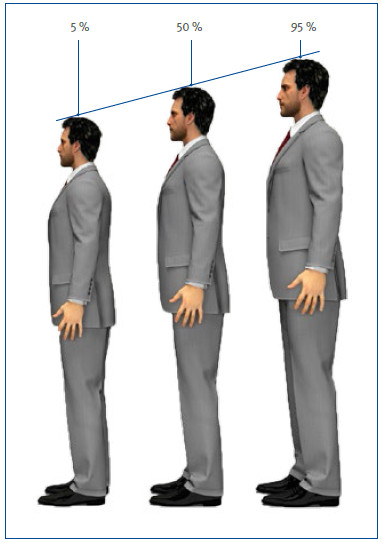
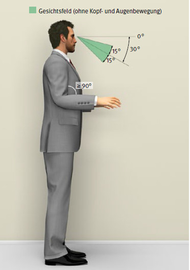
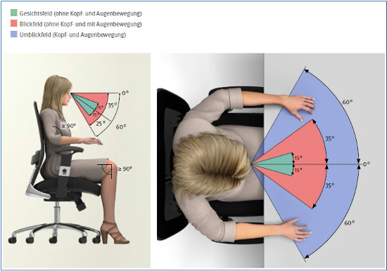

Die Arbeitsmittel müssen so gestaltet sein, dass einem möglichst großen Kreis von Benutzern mit unterschiedlichen Körpermaßen die Erledigung verschiedener Arbeitsaufgaben in ergonomischen Körperhaltungen ermöglicht wird. Bei der Gestaltung von Arbeitsmitteln werden die statistisch abgeleiteten Perzentile der Maße erwachsener Menschen (Altersgruppen 18. bis 65. Lebensjahr) zugrunde gelegt. Dabei gibt ein Perzentilwert an, wie viele Menschen unter oder über dem betreffenden Wert mit ihren Körpermaßen liegen (Abbildung 25).

Abbildung 25: Benutzergruppen
In der Praxis haben sich als zu berücksichtigende Grenzwerte das 5. und das 95. Perzentil bewährt. Das bedeutet, dass in dem jeweiligen Maß die 5 Prozent kleinsten und die 5 Prozent größten Erwachsenen nicht berücksichtigt werden.
In Deutschland sollen deshalb die Arbeitsmittel für Benutzer mit einer Körperhöhe von 1510 mm bis 1910 mm geeignet sein. Benutzer mit Körperhöhen, die außerhalb dieses Bereiches liegen, benötigen individuelle Lösungen für ihre Arbeitsmittel.
Um entsprechende Maße der Arbeitsmittel festlegen zu können, werden Referenz-Körperhaltungen für Sitzen und Stehen angenommen (Abbildungen 26 und 27). Diese Haltungen sind weder optimal noch auf Dauer anzustreben.

Abbildung 26: Referenz-Stehhaltung und Blickfelder

Abbildung 27: Referenz-Sitzhaltung und Blickfelder
Die Arbeitshöhe sollte sowohl an Sitz- als auch an Steharbeitsplätzen bei locker herabhängenden Oberarmen etwa in Ellenbogenhöhe liegen.
Eine ergonomisch günstige Arbeitshaltung wird erreicht, wenn am Steharbeitsplatz die Arbeitshöhe und am Sitzarbeitsplatz zusätzlich die Sitzhöhe den Körpermaßen des Benutzers angepasst ist.
Dabei sollten die Arbeitsplatzorganisation, die Arbeitsaufgabe und die Möbel zu spontanem Wechsel der Körperhaltung anregen.
Von Bedeutung für ergonomische Sitz- und Stehhaltungen sind außerdem Greifräume, Blickfelder, Sehabstände und Bewegungsabläufe. Um ausreichend Raum für ergonomische Arbeitshaltungen zu gewährleisten, müssen auch die Anordnung und Einstellung der Arbeitsmittel berücksichtigt werden.
Weitere Literatur
|